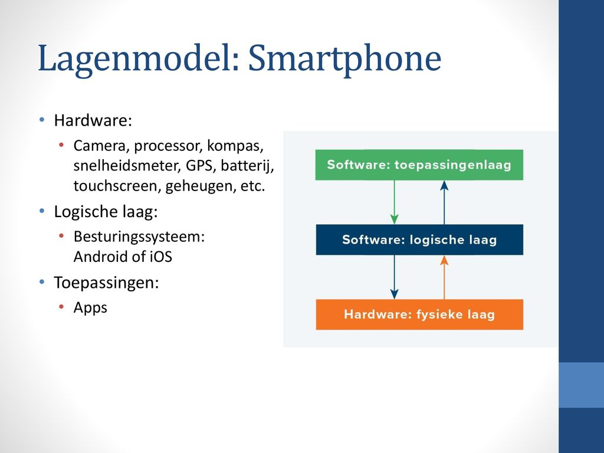

Het "drie-lagen model" verwijst meestal naar een eenvoudige manier om
een type kunstmatig neuraal netwerk te beschrijven, bekend als
een feedforward-neuraal netwerk. Dit model bestaat uit drie belangrijke lagen:
1. Invoerlaag (Input Layer): Dit is de eerste laag van het netwerk.
Hier worden gegevens, zoals getallen of kenmerken,
in het netwerk ingevoerd. Denk aan deze laag als de "gegevensontvangst".
2. Verborgen laag (Hidden Layer of Layers): Dit is de middelste laag of lagen van het netwerk.
In deze laag vindt de eigenlijke verwerking van de gegevens plaats.Het netwerk
leert patronen en relaties tussen de invoer en de gewenste uitvoer door de knooppunten
in deze laag aan te passen. Hoe meer verborgen lagen je hebt,
hoe complexer de netwerkrepresentatie van gegevens kan zijn.

3. Uitvoerlaag (Output Layer): Dit is de laatste laag van het netwerk.
Hier wordt de uiteindelijke uitvoer gegenereerd op basis van de verwerkte informatie
in de verborgen lagen. De uitvoer kan verschillende vormen aannemen,
afhankelijk van het type probleem dat het netwerk oplost, zoals classificatie, regressie of iets anders.